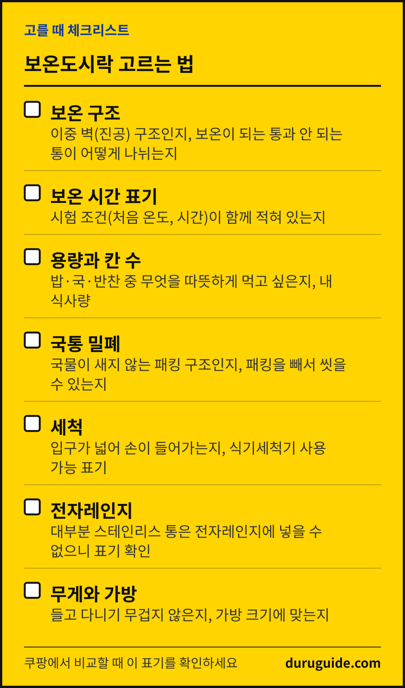

보온도시락 고르는 법, 보온 시간 표기와 세척 쉬운 구조
안 사도 되는 경우
회사에 전자레인지가 있어 바로 데워 먹을 수 있다면 일반 용기가 더 편하고, 보온도시락이 꼭 필요하지는 않아요.
이런 상황이죠
겨울에 도시락을 싸 가면 점심때쯤 밥이 차갑게 굳어 있어서 먹기 싫어지는 경우가 많아요. 회사에 전자레인지가 없거나 줄이 길어서 데우기 어렵다면 보온도시락을 알아보게 되지요. 그런데 몇 시간 보온이라는 표기도 제각각이고, 통이 여러 개라 씻기 번거롭다는 말도 있어서 어떤 걸 골라야 할지 망설여져요.
왜 생기나
보통 도시락통은 열이 금방 빠져나가요. 보온도시락은 대개 스테인리스 이중 벽 사이를 진공에 가깝게 만들어 열이 덜 빠지게 하는 구조예요. 다만 보온 시간 표기는 제품마다 시험 조건이 달라서 그대로 비교하기 어려워요. 또 처음 담는 음식의 온도, 담는 양, 바깥 온도에 따라 실제로 따뜻하게 유지되는 정도가 크게 달라져요. 반쯤만 담으면 빈 공간 때문에 더 빨리 식는 편이에요.
사기 전에 먼저 해볼 것
- 데울 방법이 있는지 먼저 봐요. 회사에 전자레인지가 있다면 전자레인지에 쓸 수 있는 일반 용기가 더 편할 수 있어요.
- 집에 있는 보온병을 활용해요. 국이나 죽은 입구가 넓은 보온병에 담아도 따뜻하게 먹을 수 있어요.
- 담는 방법을 바꿔요. 뜨거운 물을 통에 잠깐 부어 데운 뒤 물을 버리고 음식을 가득 담으면 덜 식어요.
- 가방 안 보관 위치를 봐요. 차가운 창가나 바깥에 두지 않고 따뜻한 곳에 두는 것만으로도 차이가 나요.
데울 곳이 가까이 있다면 보온도시락이 꼭 필요하지는 않아요.
고를 때 체크리스트
| 확인 항목 | 보는 기준 |
|---|---|
| 보온 구조 | 이중 벽(진공) 구조인지, 보온이 되는 통과 안 되는 통이 어떻게 나뉘는지 |
| 보온 시간 표기 | 시험 조건(처음 온도, 시간)이 함께 적혀 있는지 |
| 용량과 칸 수 | 밥·국·반찬 중 무엇을 따뜻하게 먹고 싶은지, 내 식사량 |
| 국통 밀폐 | 국물이 새지 않는 패킹 구조인지, 패킹을 빼서 씻을 수 있는지 |
| 세척 | 입구가 넓어 손이 들어가는지, 식기세척기 사용 가능 표기 |
| 전자레인지 | 대부분 스테인리스 통은 전자레인지에 넣을 수 없으니 표기 확인 |
| 무게와 가방 | 들고 다니기 무겁지 않은지, 가방 크기에 맞는지 |
이런 분께는 맞지 않아요
전자레인지로 바로 데워 먹을 수 있는 분께는 무겁고 부피만 커질 수 있어요. 차갑게 먹는 샐러드나 김밥 위주라면 보온 기능이 거의 쓸모가 없어요.
쓸 때 주의하세요
뜨거운 국물을 넣고 뚜껑을 닫으면 열 때 내용물이 튈 수 있으니 천천히 열어 주세요. 오래 따뜻하게 두는 음식은 상하기 쉬운 온도를 지날 수 있으니, 아침에 담은 음식은 그날 점심에 드시고 오래 두지 마세요. 패킹은 자주 빼서 씻고 말려 주세요.
추천 제품 찾기
먼저 따뜻하게 먹고 싶은 음식이 밥인지 국인지, 하루 식사량이 얼마인지 정해 두세요. 그다음 쿠팡에서 보온 구조, 보온 시간 표기와 시험 조건, 칸별 용량, 패킹 분리 여부, 식기세척기 사용 표기를 비교해 보세요. 현재 가격은 쿠팡에서 확인해 주세요.

위 표의 표기를 비교해 보세요.
현재 가격은 쿠팡에서 확인해 주세요.
이 포스팅은 쿠팡 파트너스 활동의 일환으로, 이에 따른 일정액의 수수료를 제공받습니다.